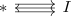
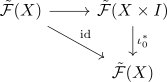
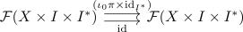
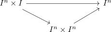

inclusion of I-invariant presheaves admits left adjoint
Proposition
Let $I \in \mathcal{C}$ be an interval object. Then the inclusion $\mathcal{P}_{I}(\mathcal{C}) \rightarrow \mathcal{P}(\mathcal{C})$ admits a left adjoint $\mathcal{L}_I$ given by
where
is the right kan extension of $(I,0,1): \Delta_{\leq 1} \rightarrow \mathcal{C}$ is the functor

see:
- right kan extension formula along \Delta_{\leq 1}
Proof
lemma
Let $X,Y \colon \Delta^{\mathrm{op}} \rightarrow \mathcal{C}$ and suppose
\begin{displaymath}
\begin{tikzcd}
\mathrm{colim}_{\Delta^{\mathrm{op}}} X & \lar{\simeq} \mathrm{colim}_{\Delta_{/[1]}^{\mathrm{op}}} \pi^*(X) \dar{h} & \arrow[shift right=1, swap]{l}{} \arrow[shift left=1]{l}{} \mathrm{colim}_{\Delta^{\mathrm{op}}} X \arrow[shift right=1, swap]{d}{f} \arrow[shift left=1]{d}{g} \arrow[bend left]{ddl}{\mathrm{id} }\\
\mathrm{colim}_{\Delta^{\mathrm{op}}} Y & \lar{\simeq} \mathrm{colim}_{\Delta_{/[1]}^{\mathrm{op}}} \pi^*(Y) & \arrow[shift right=1, swap]{l}{} \arrow[shift left=1]{l}{} \mathrm{colim}_{\Delta^{\mathrm{op}}} Y \arrow[bend right]{ddl}{\mathrm{id} }
\end{tikzcd}
\end{displaymath}where the isomorphism $\mathrm{colim}_{\Delta^{\mathrm{op}}} X \xleftarrow{\simeq} \mathrm{colim}_{\Delta_{/[1]}^{\mathrm{op}}}$ follows from projection from \delta slice to \Delta is coinitial.
Hence $f = g: \mathrm{colim}_{\Delta^{\mathrm{op}}} X \rightarrow \mathrm{colim}_{\Delta^{\mathrm{op}}} Y$.
proof
Let $\mathcal{F} \in \mathcal{P}(\mathcal{C})$. Then consider
We want to show that
- $\widehat{\mathcal{F}}$ is an \(I\)ninavriant presheaf
- $\mathcal{F} \rightarrow \tilde{\mathcal{F}}$ is an \(I\)-inavriant presheaf.
so consider

and $X \xrightarrow{\iota_0} X \times I \xrightarrow{\pi_0} X$.
We claim that $(\iota_0 \pi)^* = \mathrm{id}_{\tilde{\mathcal{F}}(X \times I)$.
Then

These are simpzlicially homotopic by the lemma.
2)
We want to show that $\mathcal{F} \rightarrow \mathcal{F}(- \times I^n)$ is an \(I\)-homotopy equivalence.
\begin{displaymath}
\begin{tikzcd}
\mathcal{F} \rar{\pi^*} \arrow[]{rd}{\mathrm{id}}& \mathcal{F}(- \times I^n) \dar{\iota^*_{(0,...,0)} \\
& \mathcal{F}
\end{tikzcd}
\end{displaymath}Let $h_1,...,h_k: I \times I \rightarrow I$ be homotopise between $\mathrm{id}_{I}$ and $0$. Then

is a homotopy between $\mathrm{id}_n$ and $(0,0,...,0)$.
A map $\mathcal{F}(- \times I^n) \times I \rightarrow \mathcal{F}(- \times I^n)$ corresponds by adjunction and \(I\)-homotopy equivalence to a map
and $I$ homotopies between $\mathrm{id}$ and $(\iota_{(0,...,0)} \pi)^*$.
therefore $\mathcal{F} \rightarrow \mathcal{F}(- \times I^n)$ is an \(I\)-homotopy equivalence and hence an \(I\)-equivalence.
Thus
is an \(I\)-equivalence.
MOreover, $\mathrm{colim}_{[-] \in \Delta^{\mathrm{op}} \mathcal{F} = ( \mathrm{colim}_{[n] \in \Delta^{\mathrm{op}}} * ) \times \mathcal{F}$
where $\mathrm{colim}_{[n] \in \Delta^{\mathrm{op}}} * =\vert \Delta^{\mathrm{op}} \vert = *$.